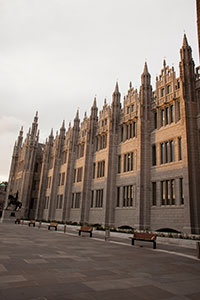
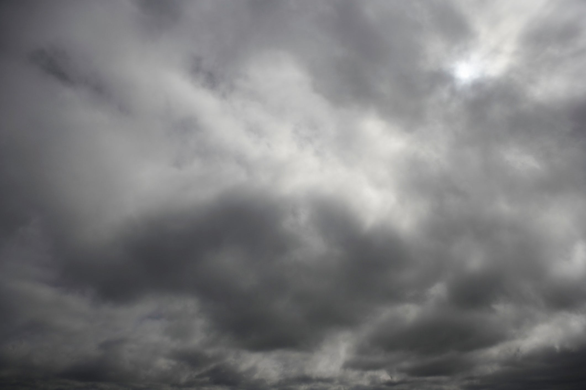

Being situated between two river mouths, the city has little natural exposure of bedrock. The small amount of geophysics done, and occasional building-related exposures, combined with small exposures in the banks of the River Don, suggest that it is actually sited on an inlier of Devonian "Old Red" sandstones and silts. The outskirts of the city spread beyond the (inferred) limits of the outlier onto the surrounding metamorphic/ igneous complexes formed during the Dalradian period (approximately 480–600 million years ago) with sporadic areas of igneous Diorite granites to be found, such as that at the Rubislaw quarry which was used to build much of the Victorian parts of the city.
Aberdeen features an oceanic climate (Köppen Cfb), with far milder winter temperatures than one might expect for its northern location. However, statistically speaking, it is still the coldest city in the UK. During the winter, especially throughout December, the length of the day is very short, averaging 6 hours and 41 minutes between sunrise and sunset at the winter solstice. As winter progresses, the length of the day grows fairly quickly, to 8 hours and 20 minutes by the end of January. Around summer solstice, the days will be around 18 hours long, having 17 hours and 55 minutes between sunrise and sunset. During this time of the year marginal nautical twilight lasts the entire night. Temperatures at this time of year hover around 17.0 °C (62.6 °F) during the day in most of the urban area, though nearer 16.0 °C (60.8 °F) directly on the coast, and around 18.0 to 19.0 °C (64.4 to 66.2 °F) in the westernmost suburbs.
Site Navigation